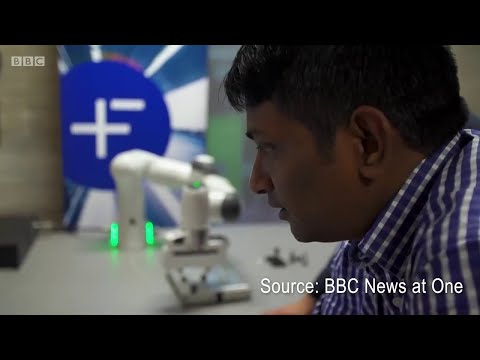
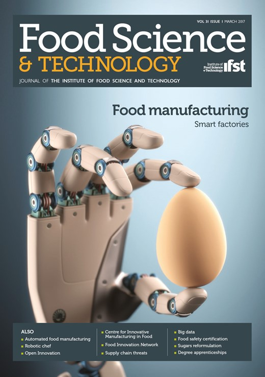
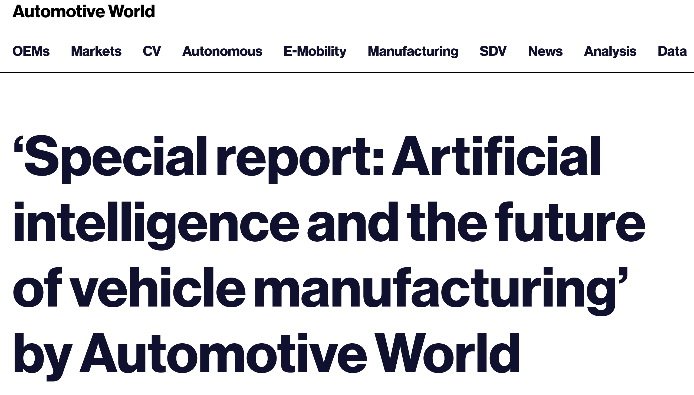
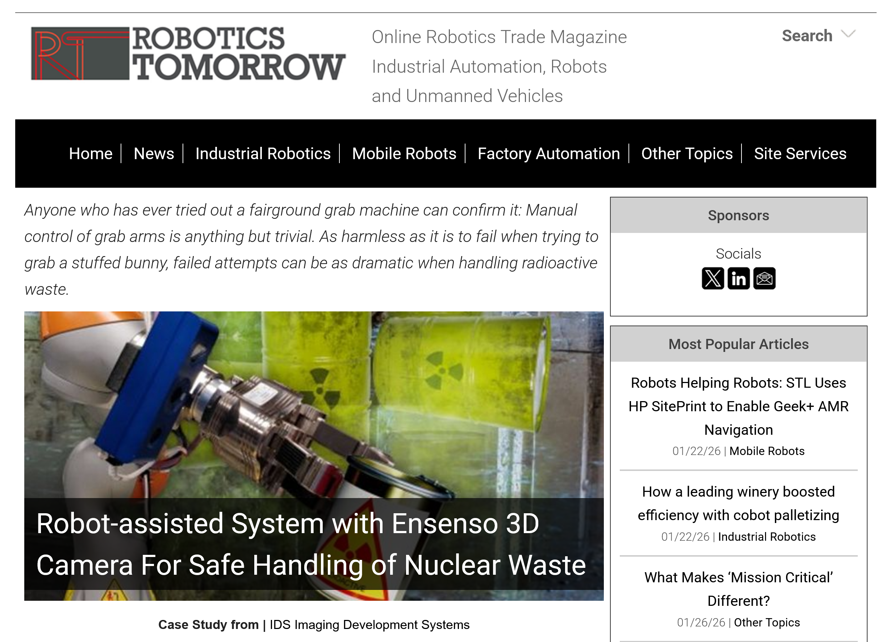
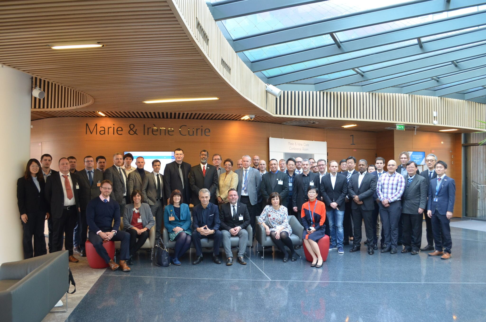
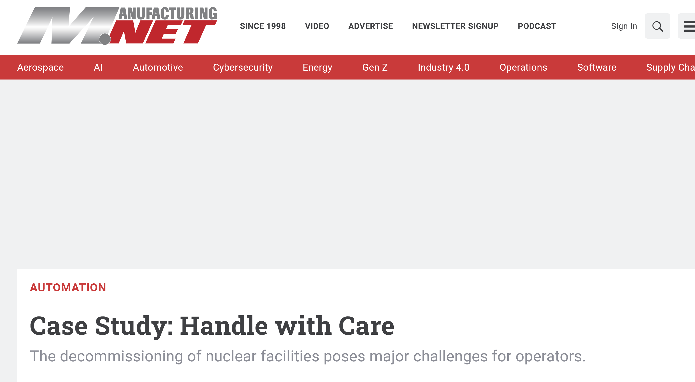
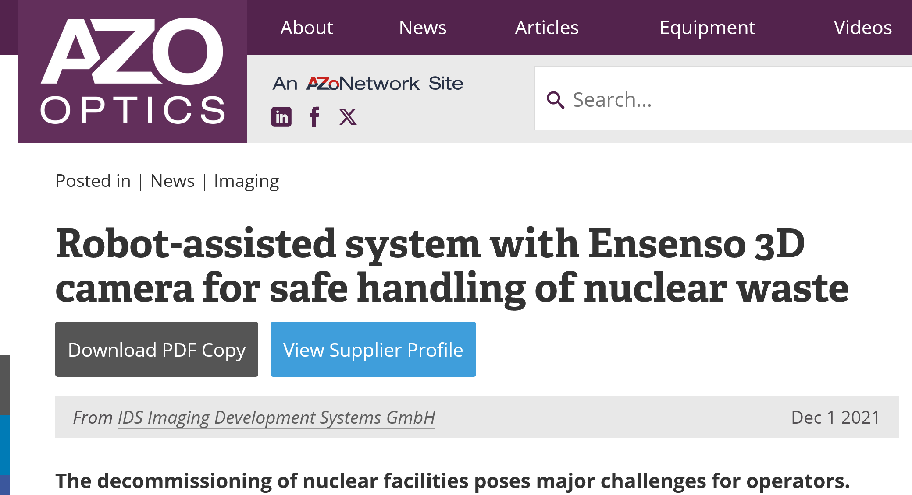
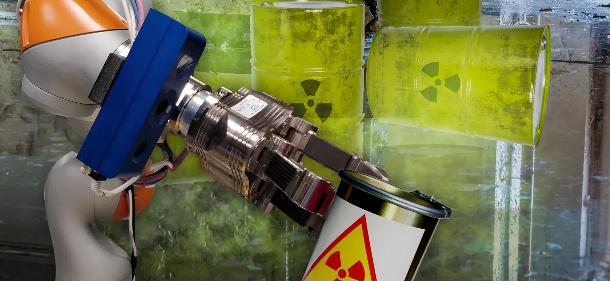
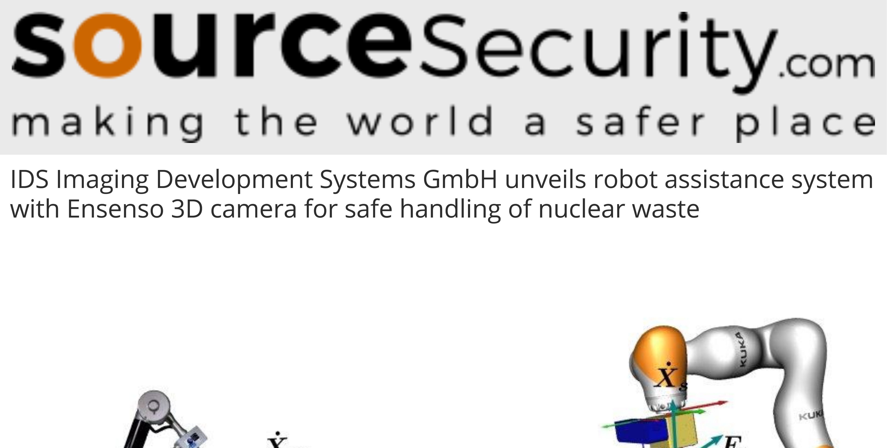

BBC News at One



Media coverage, interviews, and announcements.

Double-page center spread leading the Science and Technology section.
Robot with Ensenso 3D camera for handling nuclear waste.
Manufacturing the future: robots learn food handling.

Special report: Artificial intelligence and the auto industry.

Researchers develop new approach for handling nuclear waste.

Robot-assisted system with Ensenso 3D camera for safe handling of nuclear waste.

University of Birmingham roboticist chairs global nuclear expert group.

“Humans can't go near it”: how the Extreme Robotics Lab could solve our nuclear waste problem.
Case Study: Handle with Care.

Robot-assisted system with Ensenso 3D camera for safe handling of nuclear waste.
Robot-assisted system with Ensenso 3D camera for safe handling of nuclear waste.

Robot-assisted system with Ensenso 3D camera for safe handling of nuclear waste.

Media coverage.
